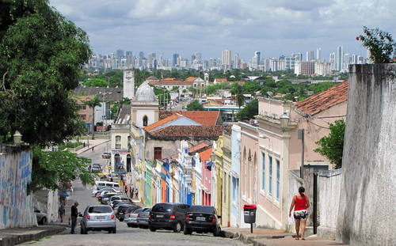

L'histoire d'Olinda
En 1534, la Couronne portugaise institua le régime des capitaineries héréditaires. La Capitainerie de Pernambuco fut livrée au noble portugais Duarte Coelho, qui prit possession de son poste de capitaine en débarquant, le 9 mars 1535, dans l'usine fondée en 1516, entre Pernambuco et Itamaracá. Peu de temps après, il s'est dirigé vers le sud à la recherche d'un endroit pour s'établir. Il trouva un endroit stratégiquement idéal, haut dans les collines, où il y avait un petit village appelé Marim, par les Indiens, y installant le village qui a donné naissance à Olinda.  Un lieu protégé par la hauteur dévoilant la mer, avec un port naturel formé de récifs, d'eau abondante et de terres fertiles, et facile à défendre, selon les normes militaires de l'époque. L'endroit était si agréable que, dit-on, le nom d'Olinda venait d'une phrase prononcée par Duarte Coelho : "Ó linda situação para se construir uma vila" ce qui peut se traduire par "O la belle situation pour construire une ville". Le jour de la fondation d'Olinda n'est pas connu ; on sait que le village a tellement prospéré qu'en 1537, il était déjà élevé au rang de village. Le 12 mars 1537, Duarte Coelho envoya au roi du Portugal, D. João III, la charte, une lettre de donation décrivant tous les lieux et améliorations existant dans le village d'Olinda. Sur les plages, le village a été fortifié pour la défense et du haut des collines s'est étendu vers la mer, le port et l'intérieur où les sucreries étaient situées. Avec l'extraction du bois brésilien et le développement de la culture de la canne à sucre, Olinda devint l'un des centres commerciaux les plus importants de la colonie, s'enrichissant au point de concurrencer la cour portugaise en luxe et en ostentation. Le tracé urbain du village a été façonné, encore au XVIe siècle, avec la définition des chemins et l'occupation des principaux promontoires par les religieux. Avec l'arrivée des premiers ordres religieux - carmes en 1580, jésuites en 1583, franciscains en 1585 et bénédictins en 1586 - il y eut aussi la catéchèse des Indiens, d'une importance fondamentale pour la conquête définitive du pays. Le 16 février 1630, les Pays-Bas envahirent Olinda et conquirent Pernambuco. Une fois la ville prise en charge, les Hollandais se sont installés dans le village et les îles près du port et ont abandonné Olinda. Le 24 novembre 1631, les Hollandais mirent le feu à Olinda après avoir enlevé les matériaux nobles des bâtiments pour construire leurs maisons à Recife, qui ont commencé à prospérer sous l'administration néerlandaise. Le 27 janvier 1654, les Hollandais furent expulsés et la lente reconstruction du village d'Olinda commença. APRÈS 1654 - Après 1654, on ne peut plus changer le destin de Recife, qui a commencé à occuper cette place avant Olinda. Recife était le quartier général, bien que non officiel, et Olinda, détachée, lentement reconstruite, n'ayant plus l'importance qu'elle avait dans ces années avant 1630. Une carte du milieu du XIXe siècle révèle une ville, titre obtenu en 1676, toujours de la même dimension que la vieille ville. Il est vrai que leurs maisons religieuses ont été reconstruites de façon monumentale. Le mercantilisme présent à Recife et la rationalité de cette nouvelle relation, à la lumière du nouveau monde des XVIe et XVIIe siècles, ont finalement gagné. L'avenir d'Olinda est façonné par l'importance croissante de Recife. Le centre historique (actuel), au milieu du XIXe siècle, était encore entouré de propriétés rurales, les plus grandes, les moulins, pour la plupart de feu, ceux de la plaine inondable de Beberibe, et les plus petites, les sites, sur les rives de la rivière Beberibe et la mer Olinda étant un lieu de maisons et où l'Académie de Droit a été installée depuis 1827, elle acquiert une certaine importance par rapport au lieu de travail, Recife. Mais c'est l'intérêt des bains de mer sains, recommandés par les médecins, qui lui donne une nouvelle vie. Nouvelle vie qui est bien représentée par l'intérêt d'une liaison plus rapide, à travers un train urbain, avec Recife, cela s'est fait depuis le carrefour, par une ancienne route qui existait depuis le XVIe siècle. En principe, les vacanciers utilisaient des maisons de tiers, louées pour la saison estivale. Ensuite, des biens immobiliers sont acquis et cela devient une habitude de vivre en ville, même en dehors de la saison estivale. C'est la renaissance de la ville. Cette transformation se fait sentir dans les maisons près de la mer, où elles sont vêtues de vêtements éclectiques et, avec les réformes des façades, se modernisent. Ce qui était limité aux zones proches des plages se dirigera ensuite vers les autres rues de la ville. Une transformation urbaine qui redonne vie à la vieille ville. L'eau potable apportée aux maisons par la compagnie Santa Teresa, et l'électrification, montrent l'importance de la reconquête de la ville. Bientôt, le train urbain a été remplacé par le tramway électrique au début du XXe siècle.